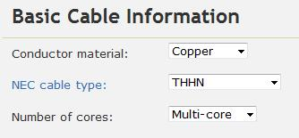
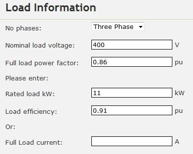
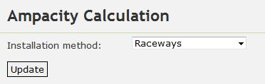
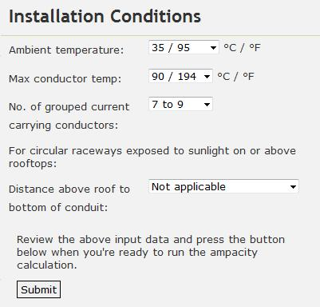
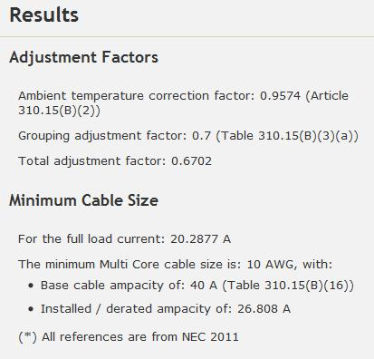
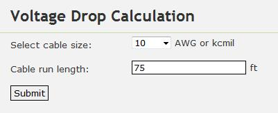
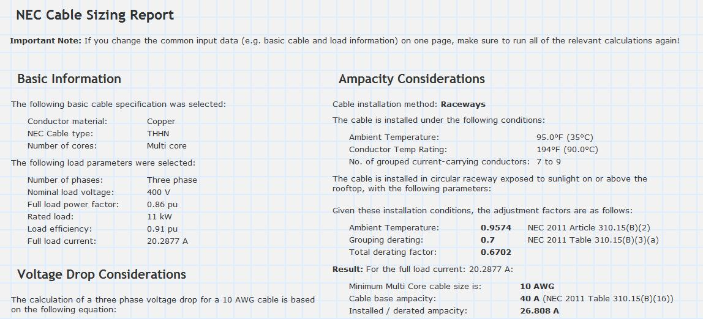

NEC Tutorial
1. Introduction
In this tutorial, we will size a cable for a 3-phase, 400V, 11kW load with power factor 0.86 and efficiency 0.91. A 3C cable is selected with copper conductors and heat- and moisture-resistant thermoplastic (THHN) insulation operating at less than 90°F. The cable will be run from a distribution board to the load via underfloor raceways at an ambient temperature of 95°F. The cable will be run in the same raceway with two other 3C cables. The cable run is expected to be approximately 75 ft and the maximum allowable voltage drop is 5%.
2. Ampacity Considerations
We'd first like to determine the minimum cable size such that the cable's ampacity (or current carrying capacity) is sufficient to continuously supply the load without being damaged.
Firstly, we enter in the following basic cable parameters:
Next, we enter in the following load information (note that given this data, Cablesizer will automatically calculate the full load current):
Then we enter in the installation method "Raceways" and press the update button:
Lastly, we enter in the cable installation conditions. As there will be three 3C cables in the same raceway, a total of 9 grouped current carrying conductors needs to be selected. Also, the raceways are not exposed to sunlight so we leave the distance above roof to conduit as "Not applicable".
Pressing the submit button yields the following results:
The results show that the minimum cable size based on ampacity considerations is a 10AWG.
3. Voltage Drop Considerations
Next we'd like to size the cable so that the voltage drop across the cable is less than the 5% maximum allowable voltage drop criteria specified earlier.
When we click on the "Volt Drop" link, the basic cable and load information that we filled in earlier is retained, so we don't have to enter it in again. We'd first like to check what the voltage drop is at the minimum cable size calculated earlier (10 AWG). So we enter in the following information:
Pressing the submit button yields the following results:

The results show that a 10 AWG cable has a calculated volt drop of 0.6967%, lower than our maximum allowable volt drop of 5%. Therefore a 10 AWG cable is the appropriate choice for this application.
4. Cable Sizing Report
Finally, we can click on the "Report" link and print out the cable sizing report (see the snippet below):
